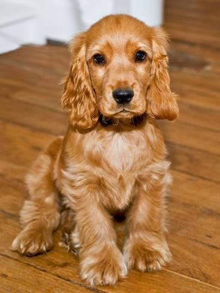

About Me
The English Cocker Spaniel is a compactly built sporting dog standing between 15 to 17 inches at the shoulder. The softly contoured head, with its dark, melting eyes that convey an alert and dignified expression, is framed by lush, close-lying ears. The medium-length coat, seen in a variety of striking colors and patterns, is silky to the touch. “Balance” is a key word in understanding the breed: The English Cocker Spaniel is balanced in temperament, construction, and movement.
Beneath the English Cocker Spaniel physical beauty beats the heart of a tireless, eager-to-please hunter’s helper, famous the world over for his ability to flush and retrieve gamebirds. For those who prefer more domestic pursuits, there is no more charming and agreeable household companion.
An upbeat, active sporting dog, the English Cocker Spaniel requires daily exercise for his physical and mental well-being. He will do well with activities such as long walks or hikes with his owner or playing ball in the backyard. As his hunting instincts remain strong, he should be on a leash for walks, and a fenced yard is recommended. Merry and affectionate, the English Cocker Spaniel is an excellent family companion and easy to train. Whether he is working in the field or at home lounging on the sofa, his tail rarely stops wagging.